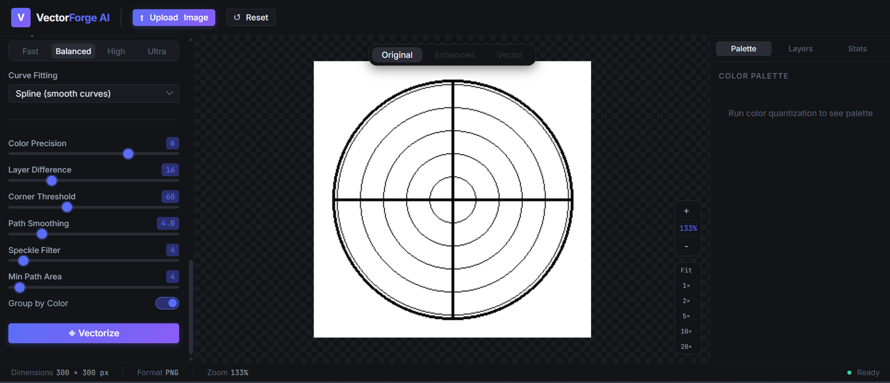
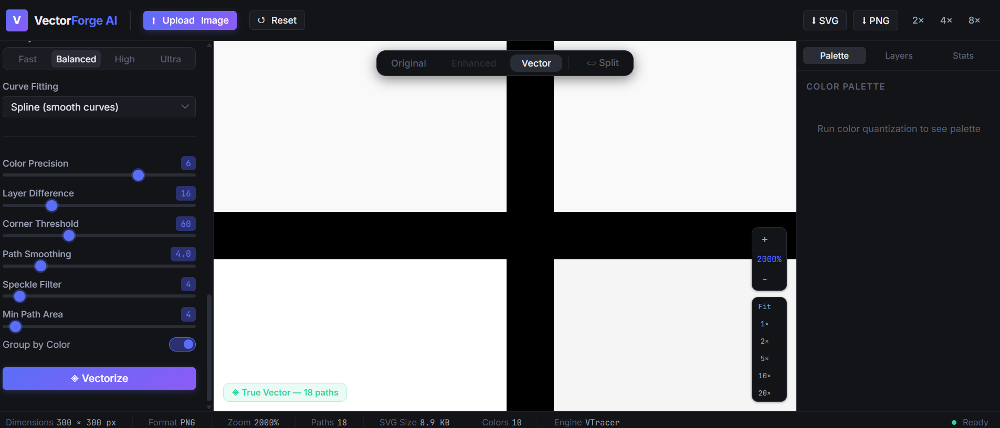
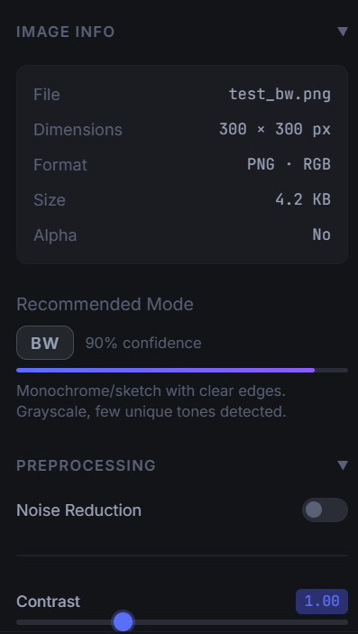
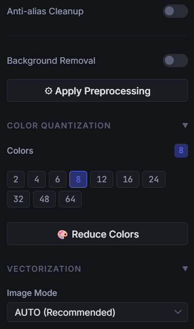
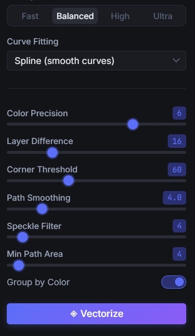
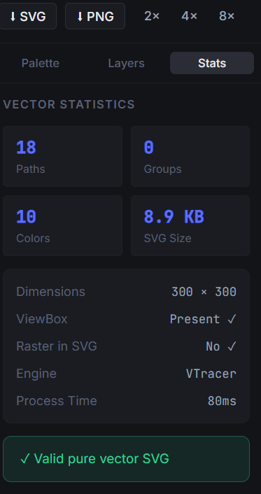
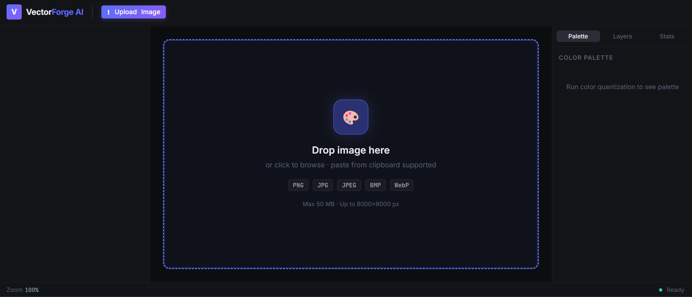

VectorForge AI — Master Documentation
Production-grade, 100% local-first raster-to-vector web application. Converts blurry logos, icons, illustrations, and line art into crisp, infinitely scalable Bézier curve SVG paths without cloud services or subscriptions.
⚡ Core Philosophy
Online vectorization platforms (such as Vectorizer.io) impose severe paywalls, daily credit caps, and send proprietary or sensitive user artwork to remote cloud servers.
Vectorizer AI was architected from the ground up as a zero-telemetry, offline-first alternative for Windows. It provides professional graphic design capabilities:
- Zero API Keys or Subscriptions: Operates entirely on your local CPU/GPU hardware.
- Infinite Scalability: Emits pure
<path>and<polygon>vectors with standardviewBoxtags that stay razor-sharp at 2000% zoom. - Smart Preprocessing: Automatically removes artifacts from blurry JPEGs, balances contrast with CLAHE, and isolates color layers via K-Means quantization.
📐 System Architecture
The application is decoupled into a high-performance Python FastAPI backend and a reactive React 19 frontend studio:
File Structure Map
backend/app/main.py— FastAPI entry point, lifespan manager, and CORS rules.backend/app/image_processing/— Analysis, preprocessor, and quantizer pipelines.backend/app/vectorization/— VTracer engine, Contour engine, and dynamic selector.backend/app/export/— Scour SVG optimization andresvg-pyPNG renderer.frontend/src/store/appStore.ts— Zustand state management with mobile tab switching.frontend/src/components/— TopBar, LeftPanel, PreviewCanvas, RightPanel, StatusBar.
⚖️ Comparison: Vectorizer AI vs. Cloud Converters
| Capability | Vectorizer AI ⚡ | Vectorizer.io & Cloud Tools ☁️ |
|---|---|---|
| Cost & Licensing | 100% Free & Open Source (MIT) | Monthly subscription or per-credit fee |
| Data Privacy | 100% Local-First (0 bytes leave device) | Images uploaded to remote servers |
| Offline Support | ✅ Fully works offline on Windows | ❌ Requires continuous high-speed internet |
| Vector Engine | ✅ Rust VTracer (Smooth Bézier Splines) | Proprietary cloud engine |
| Deep Zoom Studio | ✅ Up to 2000% with split slider | Fixed or limited browser zoom |
| Color Palette Control | ✅ K-Means & Median-Cut (2 to 64 colors) | Automated without custom clustering |
| High-Res PNG Upscaling | ✅ 1×, 2×, 4×, 8× via Rust resvg |
Often 1× only or extra charge |
⚙️ Dual Vector Engines
To balance speed with aesthetic curve fitting, Vectorizer AI employs two complementary vectorization engines:
| Engine | Underlying Technology | Ideal Target Artwork | Key Strengths |
|---|---|---|---|
| VTracer Engine | Rust compiled library with Python PyO3 bindings | Multi-color logos, illustrations, stickers, photos | High-order Bézier curves, no staircasing, stacked/cutout hierarchy |
| Contour Engine | OpenCV findContours + approxPolyDP |
Black & white line drawings, stamps, technical blueprints | Ultra-fast processing (<100ms), pure polygon simplification |
vtracer.convert_image_to_svg_py MUST be called with positional arguments in exact sequence to avoid PyO3 tuple parsing panics.
🧠 Intelligent Image Pre-Analysis
When an image is uploaded, app/image_processing/analyzer.py computes its edge complexity, color variance, and alpha transparency to recommend the optimal tracing mode:
LOGO— Clean, flat color regions with high edge continuity. Defaults to spline smoothing.ILLUSTRATION— Layered multi-tone graphic. Balances color precision with noise filtering.SKETCH— High-frequency line contours. Triggers adaptive contrast thresholding.BW— Binary black and white artwork. Routed directly to Contour engine for maximum sharpness.PHOTO— Continuous gradients. Uses K-Means quantization to group tones before tracing.
🎛️ Preprocessing & Color Quantization Suite
Transform noisy, blurry low-resolution rasters into clean inputs ready for vectorization:
| Module | Parameter Range | Functionality |
|---|---|---|
| Noise Reduction | Strength: 1.0 – 20.0 | Bilateral filter removes JPEG compression noise while preserving hard edges |
| Contrast (CLAHE) | Value: 0.1 – 3.0 | Adaptive histogram equalization clarifies faint artwork details |
| Sharpening | Strength: 0.0 – 2.0 | Unsharp masking enhances blurry boundary pixels |
| Background Removal | Tolerance: 0 – 100 | Flood-fills corner color with tolerance to isolate subject on transparent canvas |
| Color Quantization | Colors: 2 – 64 | K-Means clusters pixel colors and generates palette with area coverage percentages |
🎯 Optimal Settings Guide by Image Type (Kaunsi Setting Kis Image Ke Liye Best Hai?)
Har image ka structure mukhtalif hota hai. Ek flat-color logo ko vectorize karne ke rules photo ya pencil sketch se mukammal alag hote hain. Niche diye gaye matrix aur guides ko follow karein taake pehli koshish mein hi 100% perfect, sharp aur clean vector mile:
| Image Category | Target Image Types | Recommended Mode | Speckle Filter | Stacking Hierarchy | Recommended Preset | Key Optimization Rule |
|---|---|---|---|---|---|---|
| Flat-Color Logos & Icons | Logos, app icons, badges, typography, stickers (e.g. test_logo.png) |
LOGO / CLIPART | 0 (Crucial!) | Cutout | High / Ultra | Speckle Filter ko 0 par rakhein taake 1-3px patli borders aur outlines delete na hon. Cutout hierarchy se colors dark lines ke peeche bleed nahi karte. |
| Geometric & B&W Line Art | Concentric circles, crosshairs, targets, CAD blueprints (e.g. test_bw.png) |
BLACK & WHITE | 0 | Auto / Primitive | Balanced / High | Primitive Detection automatically activates: Emits true mathematical <circle> and <line> primitives for infinite sharpness even at 10,000% zoom. |
| Multi-Color Shaded Graphics | Complex vector illustrations with abutting shapes (e.g. test_complex.png, test_multicolor.png) |
AUTO / LOGO | 1 | Stacked | High | Stacked hierarchy use karein taake adjacent curves ke darmian transparent hairline dararein (seam holes) bilkul na banen (0 seam holes guaranteed). |
| Hand-Drawn Sketches | Pencil drawings, pen doodles, scanned notebook sketches, stamps | SKETCH | 1 – 2 | Stacked / Cutout | High | Preprocessing tab mein CLAHE Contrast ko 1.3 – 1.6 karein aur Noise Reduction (2.0) on karein taake kagaz ka texture saaf ho jaye aur faint pencil lines dark ho jayen. |
| Photos & Continuous Art | Portraits, landscape photos, wallpapers, complex gradients | PHOTO | 2 – 4 | Stacked | Balanced / High | Pehle Color Quantization tab mein ja kar colors ko 16 ya 24 par reduce karein. Is se continuous gradient ek stylish, clean vector poster art mein convert ho jata hai. |
🔍 Deep-Dive: Image-Specific Setup Examples
1. Flat-Color Logo with Outlines & Borders (Example: test_logo.png)
Common Problem: Agar default settings use ki jayen toh black line ke neeche se yellow line leak ho sakti hai aur triangle ke gird 2-pixel patla brown border gayab ho sakta hai.
- Image Mode:
LOGO / CLIPART - Quality Preset:
HighyaUltra - Speckle Filter:
0(Important: Value > 0 karne se 2-3px patli borders 'noise' samajh kar delete ho jati hain!) - Curve Fitting:
Spline - Result: Zero yellow bleed under black line, 100% brown border intact, razor-sharp vector corners.
2. Geometric Circles, Crosshairs & Line Art (Example: test_bw.png)
Common Problem: Standard raster vectorizers circles ko chhotay chhotay Bézier splines mein tortay hain, jis ki wajah se 1700% zoom par circle stepped/jagged (teeth) lagta hai.
- Image Mode:
Black & White(yaAUTO) - Quality Preset:
BalancedyaHigh - Under the Hood: VectorForge AI ka Primitive Detector automatically trigger hota hai aur raster curves ke bajaye asli
<circle cx=".." cy=".." r=".."/>emit karta hai. - Result: Infinite mathematical sharpness at any zoom level (100% se 20,000% zoom tak bilkul smooth gol circle).
3. Complex Graphic / Multi-Color Sticker (Example: test_complex.png)
Common Problem: Agar shapes ko cutout tor par alag alag banaya jaye toh browsers unke darmian 1-pixel ki safeed/transparent dararein (anti-aliasing seam gaps) dikha dete hain.
- Image Mode:
AUTOyaLOGO - Stacking Hierarchy:
Stacked(Layers overlap gracefully, creating 0 transparent seam gaps) - Quality Preset:
High(Color Precision: 7, Layer Difference: 12) - Result: 0 seam holes, perfectly connected color regions, smooth circle disks without black wedges.
⚙️ Complete Vectorization Settings & Sliders Reference
Har slider aur dropdown option backend par VTracer Rust engine ke math parameters ko directly control karta hai. Yahan har setting ki mukammal tafseel di gayi hai:
| Parameter Name | Values / Range | Default | Engine Functionality & Real Impact |
|---|---|---|---|
| Image Mode | auto, logo, photo, sketch, bw |
auto |
Engine selector pipeline ko route karta hai. bw primitive geometric detection chalata hai, logo cutout hierarchy use karta hai, sketch line-contrast preservation chalata hai. |
| Quality Preset | fast, balanced, high, ultra |
high |
VTracer ke tamam mathematical thresholds (iterations, length threshold, path precision) ko ek sath pre-configure karta hai. |
| Speckle Filter (filter_speckle) | 0 – 64 pixels |
1 (Logo mein 0) |
Most Important Setting for Outlines:
Is value se chhotay area wale patches ko VTracer "noise" samajh kar ura deta hai. • 0: 1-pixel aur 2-pixel patli borders, delicate text, aur thin outlines 100% mehfooz rehti hain.• 1 – 4: JPEG artifacts aur pixel noise ko saaf karta hai (photos aur sketches ke liye best).
|
| Stacking Hierarchy (hierarchical) | stacked | cutout |
stacked (Logo mein cutout) |
• Cutout: Har color shape ek independent puzzle piece banti hai. Colors ek doosre ke peeche bleed nahi hote (Logos aur icons ke liye zaroori). • Stacked: Shapes ek doosre ke upar layer-by-layer draw hoti hain. Anti-aliasing hairline gaps ko rokti hai (Illustrations ke liye best). |
| Curve Fitting (mode) | spline | polygon | none |
spline |
• Spline: Cubic Bézier curves (smooth, professional vector look). • Polygon: Straight lines aur angled segments (chunky/retro/origami style). • None: Raw pixel contour stepping. |
| Color Precision | 1 – 8 |
7 |
VTracer color space resolution. 8 par har subtle color shade accurate rehta hai; low values similar colors ko merge kar deti hain. |
| Layer Difference | 2 – 32 |
12 |
Do color layers ke darmian minimum Euclidean color distance. Kam value subtle gradient steps banati hai; bari value image ko bold solid blocks mein simplify karti hai. |
| Corner Threshold | 0 – 180° |
60° |
Jab do segments ka angle is value se kam ho, VTracer wahan sharp corner banata hai; agar angle zyada ho toh usko smooth curve mein turn karta hai. |
| Length Threshold | 1.0 – 10.0 |
2.0 |
Bézier segment ki minimum length. Chhoti value fine details capture karti hai; bari value paths ko clean aur compact banati hai. |
| Geometric Primitives | Enabled (Auto) |
True |
B&W line art mein Hough Transform se asli <circle> aur <line> detect kar ke emit karta hai (Infinite optical zoom fidelity). |
⚠️ Troubleshooting & Frequently Asked Questions (FAQ)
Q1: Black line ke neeche ajeeb si yellow ya colored line kyun dikhai de rahi hai?
Wajah: Default stacked mode mein light color dark line ke peeche phail jata hai aur spline overshoot ki wajah se 1 pixel bahar nikal aata hai.
Hal: Image Mode ko LOGO / CLIPART set karein ya left panel se "⚡ Use Recommended Settings" dabayein (yeh automatically cutout mode lagata hai jahan koi color bleed nahi hota).
Q2: Triangle ya kisi shape ke ird-gird patla brown / dark border gayab kyun ho gaya?
Wajah: Speckle Filter ki value 1 ya zyada thi, jis se 2-3px patli border noise samajh kar delete ho gayi.
Hal: Left Panel mein Speckle Filter slider ko 0 par kar dein. Har patli se patli line poori tarah preserve ho jayegi.
Q3: Shapes ke darmian safeed rang ki patli dararein (hairline cracks) kyun nazar aati hain?
Wajah: Cutout mode mein browser anti-aliasing ki wajah se do milte hue paths ke darmian sub-pixel gap reh jata hai.
Hal: Multi-color illustrations ke liye Stacked hierarchy use karein ya background layer on rakhein.
🖼️ Background Remover Studio: Fast (ISNet) & Ultra (BiRefNet)
VectorForge AI features a dedicated, local-first background removal engine providing studio-grade alpha transparency without cloud APIs. It features dual AI models, morphological halo choke, and physical alpha-unmixing color decontamination.
| Tier | AI Model Name | Model Architecture | On-Disk Size | Target Complexity & Edge Fidelity | Typical CPU Latency |
|---|---|---|---|---|---|
| Fast (Default) | isnet-general-use |
U2-Net High-Frequency Boundary Segmentation | ~178.6 MB (ONNX) | Clean graphic logos, app icons, stickers, product photography | ~1.5s – 3.0s |
| Ultra (Pro) | birefnet-general |
Bilateral Reference Network (BiRefNet) Dichromatic Matting | ~972.7 MB (ONNX) | Fine human hair, animal fur, transparent glass, mesh fabrics, complex foliage | ~8.0s – 18.0s |
🔬 Edge Defringe Halo Choke & Color Decontamination Architecture
Standard AI segmentation masks often leave a faint, unsightly fringe or border-color halo from the original backdrop. VectorForge AI eliminates this via a 3-stage post-processing pipeline:
-
1. Morphological Halo Choke (
cv2.erode): Erodes the alpha boundary using an elliptical kernel (cv2.getStructuringElement(cv2.MORPH_ELLIPSE, (k, k))with $k \in [1, 9]$). This physically pulls the cutout edge inward, stripping away border bleed before color blending. -
2. Physical Alpha-Unmixing Color Decontamination:
In semi-transparent border pixels ($0.05 < \alpha < 0.95$), the observed color is an optical composite of foreground and backdrop:
By inverting this optical formula, the algorithm subtracts contaminated backdrop tint and restores pure foreground color channels.true_fg = np.clip((observed_bgr - bg_color * (1.0 - alpha)) / alpha, 0, 255)
- 3. Sub-Pixel Gaussian Feathering: Applies gentle Gaussian blurring (radius $0.0 - 9.0$) strictly to the alpha channel to guarantee silky smooth curve transitions for Bézier spline fitting.
sess_opts.enable_cpu_mem_arena = False and automatic garbage collection. If birefnet-general.onnx is not downloaded, Ultra mode automatically falls back to isnet-general-use without raising 500 errors.
✨ Image Enhancer Studio: Fast (x4v3) & Ultra (RealESRGAN_x4plus)
Low-resolution, compressed, or blurry raster graphics produce jagged and distorted vector paths. The Image Enhancer Studio reconstructs sharp edges, synthetic high frequencies, and removes compression artifacts before vectorization.
| Tier | AI Model | Neural Network Architecture | Size on Disk | Inference Strengths & Processing Goals |
|---|---|---|---|---|
| Fast (Default) | realesr-general-x4v3 |
Compact Neural Super-Resolution CNN | ~4.9 MB (ONNX) | Lightweight 4× neural upscaling + 6-stage classical CV pipeline (~1-2s latency) |
| Ultra (Pro) | RealESRGAN_x4plus |
23-layer Residual-in-Residual Dense Block (RRDBNet) | ~67.1 MB (ONNX) | Maximum perceptual super-resolution; synthesizes micro-details and clean contours |
⚙️ 6-Stage Classical Computer Vision Post-Enhancement Pipeline
- Stage 1 — Neural Super-Resolution: 4× spatial upscale via Real-ESRGAN (x4v3 in Fast, x4plus in Ultra, or Lanczos-4 if models absent).
- Stage 2 — Bilateral Edge-Preserving Denoising: Removes JPEG blocking artifacts without blurring boundary contours.
- Stage 3 — LAB Color Space CLAHE: Equalizes contrast-limited histograms on the $L^*$ channel, avoiding color shifts while clarifying faint details.
- Stage 4 — Gaussian High-Pass Unsharp Masking: Accentuates high-frequency transitions ($I_{\text{sharp}} = 1.5 \cdot I - 0.5 \cdot G_\sigma(I)$).
- Stage 5 — Morphological Contour Refinement: Smooths staircase pixel noise along vector perimeter boundaries.
- Stage 6 — HSV Dynamic Range Tuning: Optimizes color saturation and dynamic vibrance for distinct palette quantization.
👤 Face Restoration: YuNet Landmark Alignment & GFPGAN v1.4
When restoring vintage portraits, low-resolution profile photos, or damaged group photographs, super-resolution models alone can distort human facial anatomy. VectorForge AI integrates a dedicated Generative Facial Prior pipeline combining ultra-fast 5-point landmark detection with StyleGAN2-based codebook priors.
| Subsystem | Model / Library | Architecture & Format | Size on Disk | Functionality & Math Principle |
|---|---|---|---|---|
| Landmark Detection | face_detection_yunet |
YuNet CNN (cv2.FaceDetectorYN) |
~227 KB (ONNX) | Detects face bounding boxes and predicts 5 key facial coordinates (left/right eyes, nose tip, mouth corners) in < 3ms. |
| Facial Prior GAN | GFPGANv1.4 |
Generative Facial Prior GAN (StyleGAN2) | ~324.5 MB (ONNX) | Encapsulated facial component dictionary codebooks restore realistic eye pupils, irises, eyelashes, teeth, and skin micro-textures. |
🔬 Mathematical Alignment & Inverse Affine Fusion Workflow
-
Similarity Transform Matrix:
cv2.estimateAffinePartial2Dcomputes the optimal partial affine transform matrix mapping detected 5-point facial landmarks to canonical $512 \times 512$ coordinate priors. -
Canonical Crop & Neural Synthesis:
cv2.warpAffinecrops and aligns the normalized facial region to $512 \times 512$. GFPGAN reconstructs sharp details without facial distortion. -
Inverse Affine Warp & Seamless Gaussian Blending:
The inverse transform matrix (
cv2.invertAffineTransform) maps the enhanced face back into the source canvas. A radial Gaussian feathering mask seamlessly blends the boundaries into hair, jawlines, and background.
🪄 Magic Eraser Studio: LaMa-ONNX Deep Inpainting
The Magic Eraser Studio provides studio-grade, local-first object removal, watermark erasure, and background filling powered by LaMa (Large Mask Inpainting) using Fast Fourier Convolutions (FFC).
| Model | Neural Network Architecture | Size on Disk | Resolution Pipeline | Core Strengths & Latency |
|---|---|---|---|---|
lama_fp32 |
Fast Fourier Convolutions (FFC) ResNet Inpainting | ~198.4 MB (ONNX) | Native $512 \times 512$ inference + Lanczos-4 upscaling | Global frequency-domain receptive field; eliminates unwanted objects, cables, people, and text in ~3–5s on CPU. |
🎨 Interactive Sub-Pixel Canvas Brush & Coordinate Scaling
-
Sub-Pixel Coordinate Mapping:
The interactive brush overlay dynamically converts viewport CSS mouse events to native raster coordinates:
scaleX = canvas.width / rect.width; scaleY = canvas.height / rect.height; pixelX = (clientX - rect.left) * scaleX; pixelY = (clientY - rect.top) * scaleY;
-
Neon Red Stroke Overlay:
Draws smooth circular strokes with
ctx.lineCap = 'round'andctx.lineJoin = 'round'with vividrgba(239, 68, 68, 0.65)feedback. -
Morphological Mask Dilation ($0 - 25\text{px}$):
Applies
cv2.dilatewith an elliptical kernel to ensure the inpainting mask fully covers object anti-aliased perimeter fringes before neural inference. -
Lossless Mask Undo & Clear:
Complete history stack allows reverting individual strokes (
Undo) or wiping the mask completely (Clear Mask). -
Dual-Resolution Composite:
After LaMa processes the $512 \times 512$ canvas, output is resized via Lanczos-4 interpolation (
cv2.INTER_LANCZOS4) and alpha-blended with Gaussian feathering, preserving 100% of unmasked source pixels.
🩺 Live Diagnostics Dashboard & Engine Health Telemetry
VectorForge AI includes a dedicated interactive diagnostic utility (diagnose.html) and backend route (GET /api/diagnostics) for comprehensive telemetry:
| Subsystem | Inspection Checks & Telemetry Data |
|---|---|
| Neural Model Cache (7 Models) | Verifies exact byte sizes and on-disk paths for ISNet, BiRefNet, Real-ESRGAN v3, Real-ESRGAN Plus, YuNet Landmark Detector, GFPGAN v1.4, and LaMa Inpainting |
| Hardware Acceleration | Detects ONNX Runtime providers (CPUExecutionProvider, CUDAExecutionProvider, DmlExecutionProvider) |
| System & Memory Load | Reports total RAM, available RAM, memory load percentage via Windows kernel telemetry, and CPU core counts |
| Synthetic Probe Runner | Sends in-browser synthetic test rasters to /health, /api/diagnostics, /api/remove-bg, /api/enhance, and /api/inpaint with live latency benchmarking |
Open the diagnostics tool directly from the TopBar button or navigate to: Launch diagnose.html ↗
📦 Pro Models Pre-Download Helper
VectorForge AI includes a multi-threaded streaming CLI script (scripts/download_pro_models.py) equipped with HTTP Range header resume support, retry loops, and cache path validation for all 7 models:
| Model Identifier | Target Studio / Feature | Default Local Cache Location |
|---|---|---|
isnet-general-use |
Remove-BG (Fast Tier) | ~/.rembg/models/isnet-general-use/isnet-general-use.onnx |
birefnet-general |
Remove-BG (Ultra Pro Tier) | ~/.rembg/models/birefnet-general/birefnet-general.onnx |
realesr-general-x4v3 |
Enhancer (Fast Tier) | ~/.cache/realesrgan/realesr-general-x4v3.onnx |
RealESRGAN_x4plus |
Enhancer (Ultra Pro Tier) | ~/.cache/realesrgan/RealESRGAN_x4plus.onnx |
face_detection_yunet |
Enhancer (Face Landmark Alignment) | ~/.cache/gfpgan/face_detection_yunet.onnx |
GFPGANv1.4 |
Enhancer (Facial Prior Restoration) | ~/.cache/gfpgan/GFPGANv1.4.onnx |
lama_fp32 |
Magic Eraser (LaMa Inpainting) | ~/.cache/lama/lama_fp32.onnx |
🔬 Deep Zoom Studio & Split View Comparison
The center canvas allows inspection at extreme zoom levels to verify that vector paths maintain razor-sharp clarity without rasterization artifacts.
- 2000% Deep Zoom: Smooth mouse wheel scaling from 5% to 2000% with centered focal zoom.
- Infinite Pan: Click-drag canvas panning with trackpad gesture support.
- Interactive Split Slider: Real-time split bar comparing original raster on the left with vectorized SVG on the right.
- Layer Visibility Toggles: Show or hide individual color layers in the right-side panel to isolate paths.







📱 Responsive Mobile & Tablet Studio
In version 1.0.1, Vectorizer AI received a complete responsive overhaul ensuring zero horizontal overflow or squished previews on small screens:
| Viewport Breakpoint | Device Tier | Layout Behavior |
|---|---|---|
> 1080px |
Desktop / Wide Monitors | Full 3-column studio layout (280px left / flex:1 canvas / 260px right) |
821px – 1080px |
Laptops / Tablets Landscape | Compressed sidebars (245px / 225px) granting 350px–610px to canvas |
<= 820px |
Tablets & Large Phones | Segmented tabs (🎛 Controls, 👁 Canvas, 🎨 Layers) with 100% width active view |
<= 640px |
Phones Portrait | Compact TopBar (48px), hides PNG scale multipliers, clean status bar |
top: calc(100% + 8px); bottom: auto;) so they are never clipped or hidden above the browser window.
💻 Installation & Setup Guide
1. Clone Repository
2. Set Up Python Backend (Port 8000)
3. Set Up React Frontend Studio (Port 5173)
📡 REST API Reference
| Method | Endpoint | Payload / Query | Response |
|---|---|---|---|
GET |
/health |
None | {"status":"ok","version":"1.0.0"} |
POST |
/api/upload |
Multipart file |
ImageInfo (session_id, dimensions, preview_url) |
POST |
/api/analyze |
{"session_id": "..."} |
AnalysisResult (mode, confidence, notes) |
POST |
/api/preprocess |
PreprocessRequest |
PreprocessResponse (preview_url) |
POST |
/api/quantize |
QuantizeRequest (num_colors) |
QuantizeResponse (palette, preview_url) |
POST |
/api/vectorize |
VectorizeRequest (preset, mode) |
VectorizeResult (svg_url, stats, layers) |
POST |
/api/export/svg |
{"session_id":"...", "optimize":true} |
SVG binary blob (image/svg+xml) |
POST |
/api/export/png |
{"session_id":"...", "scale":2} |
PNG binary blob (image/png) |
POST |
/api/remove-bg |
Multipart file, quality ("fast"|"ultra"), defringe_choke, feather_radius, color_decontaminate |
{"success":true, "url":"/temp/...", "width":w, "height":h, "changes":[...]} |
POST |
/api/enhance |
Multipart file, quality ("fast"|"ultra"), scale (2|4), denoise_strength, contrast_boost, restore_faces (bool), face_strength (float) |
{"success":true, "url":"/temp/...", "width":w, "height":h, "changes":[...]} |
POST |
/api/inpaint |
Multipart file, mask_data (base64 PNG), dilate_pixels (int 0–25) |
{"success":true, "url":"/temp/...", "width":w, "height":h, "changes":[...]} |
GET |
/api/diagnostics |
None | Full system telemetry: platform, RAM, ONNX providers, 7-model cache statuses, disk paths |
🧪 Testing & Quality Assurance
Vectorizer AI includes automated test suites covering all computer-vision filters, vector algorithms, neural models, and API routes:
🗺️ Future Roadmap & Upcoming Enhancements
| Feature | Status | Description |
|---|---|---|
| Batch Processing Mode | Planned | Queue 20+ images simultaneously for background conversion with bulk ZIP export |
| Standalone Windows Desktop .EXE | Planned | Single-click installer packaged via Tauri (Rust) without requiring Python or Node |
| Direct EPS & PDF Vector Export | Planned | Export vector paths directly to Adobe Illustrator (.eps) and print-ready PDF |
| AI Deep-Learning Line Repair | Research | Lightweight ONNX model to automatically reconnect fragmented sketch lines |
| Client-Side WebAssembly (WASM) | Research | Compile VTracer to WASM for completely serverless execution inside static web pages |